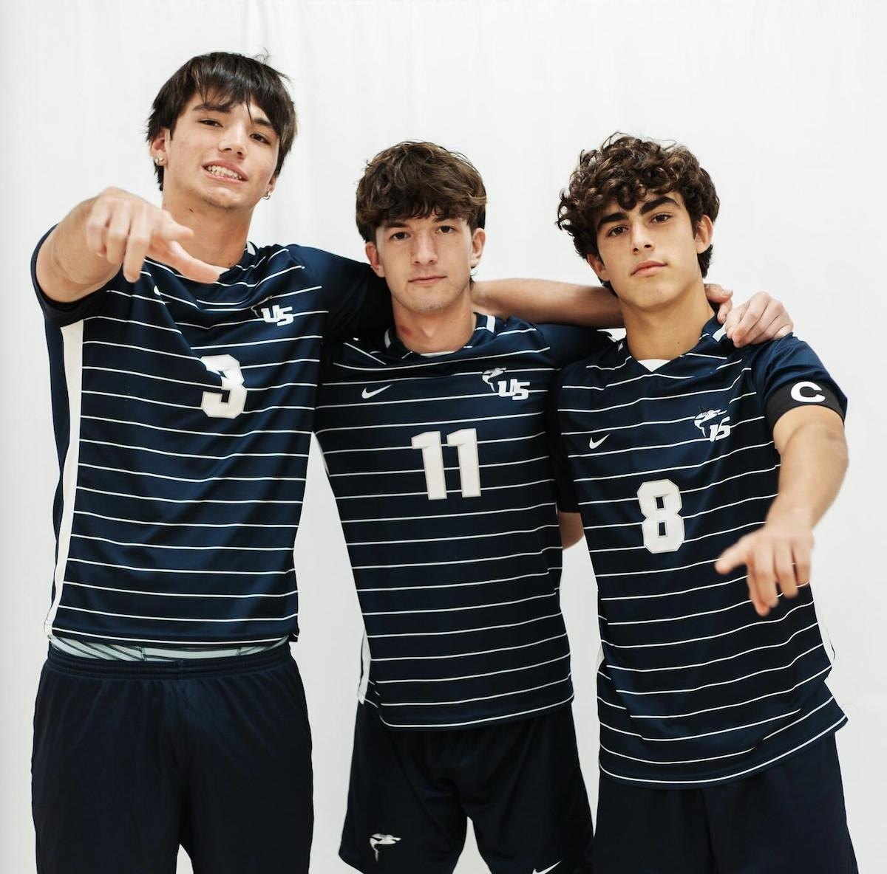
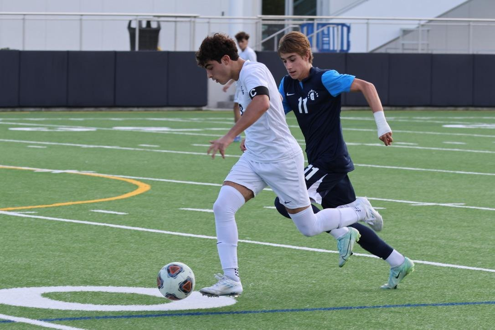
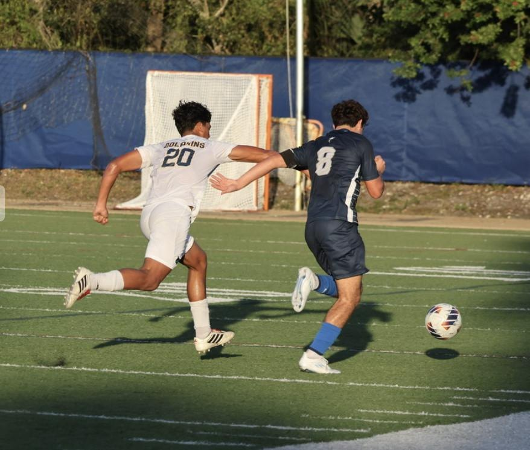
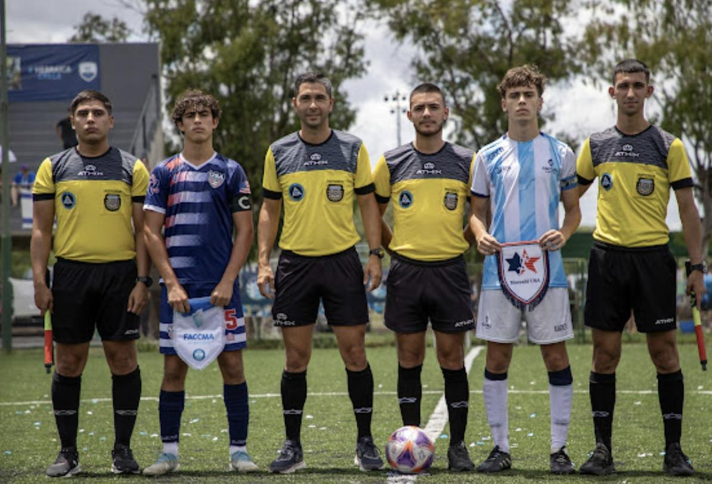
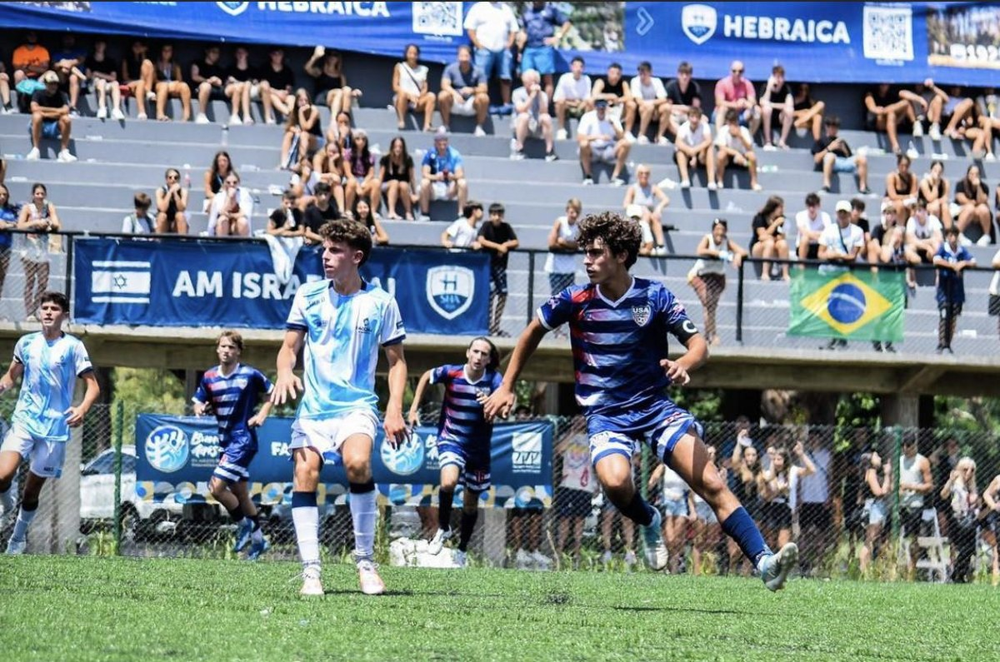
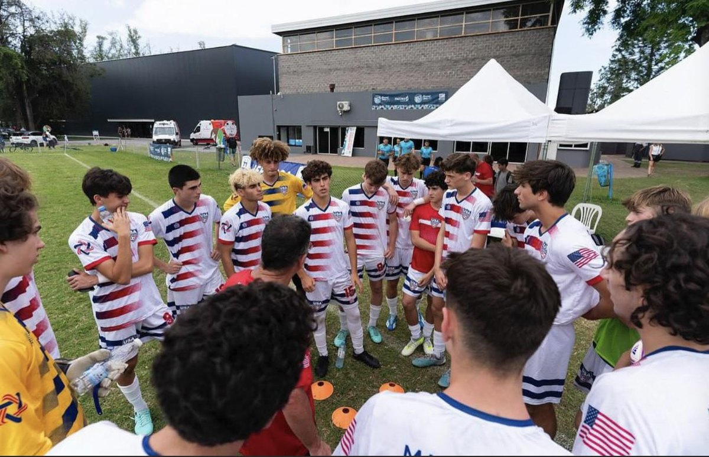
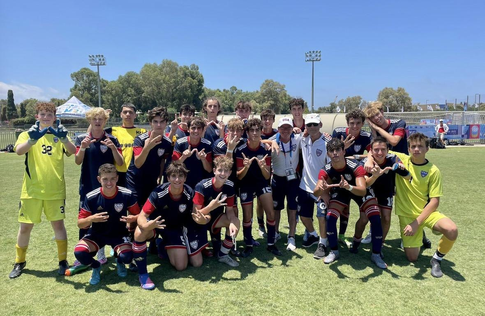
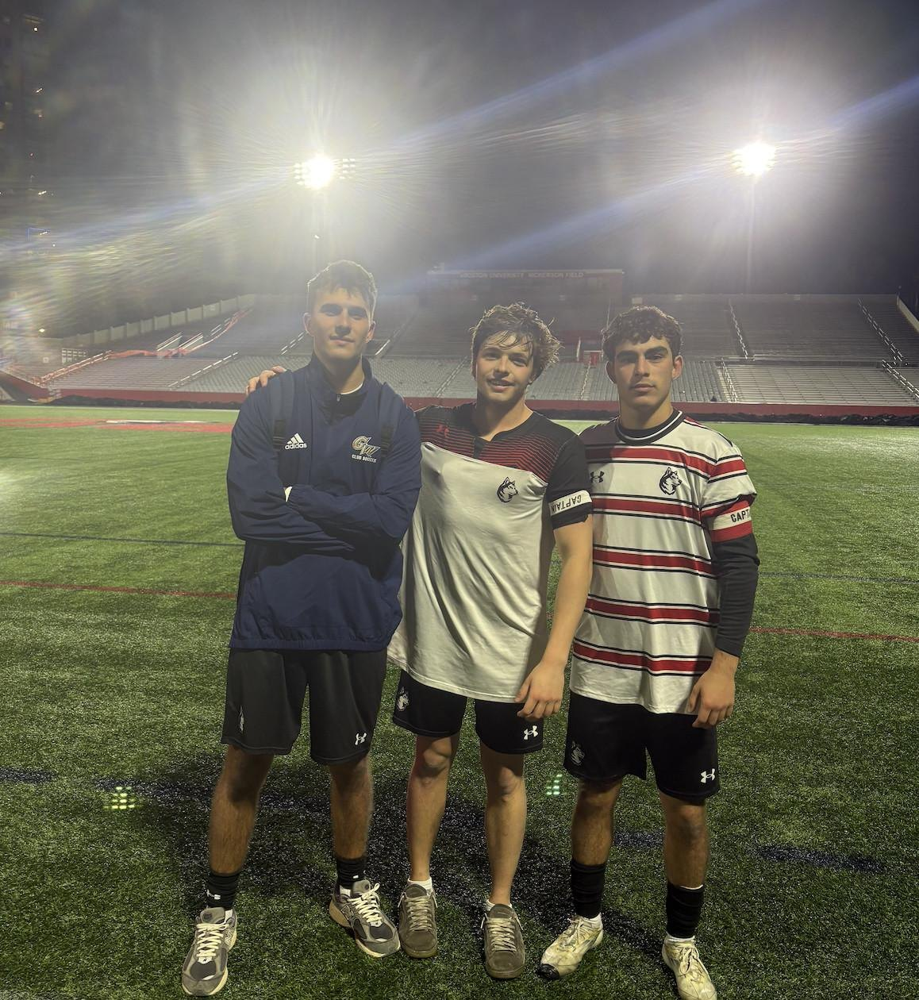

High School
I captained my high school varsity soccer team for two seasons and led the team to two regional championships and one state final. It was where I first learned what it means to set the tone for a group as its captain.



Maccabi USA
I captained the U16 and U18 men's soccer teams for Maccabi USA, the United States' Jewish national team, competing internationally at the Maccabi Games, one of the largest Jewish sporting events in the world. Leading the team out and wearing the armband for my country was a career highlight.




Northeastern Club Soccer
At Northeastern, I play for the men's club soccer team and serve on its cabinet (board), helping lead and organize the program off the field as well as on it.
